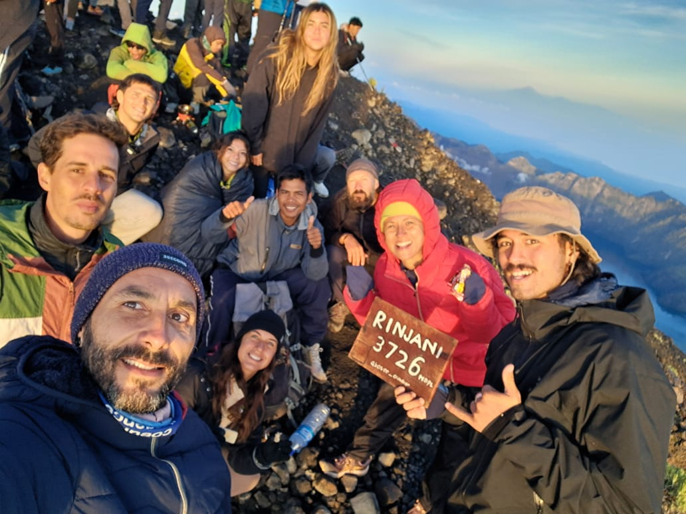

First Time on Rinjani? Here's What You Need to Know

Is Mount Rinjani suitable for beginners? The short answer is **YES**, provided you have the right preparation and a professional team behind you.
1. Choose the Right Package
For beginners, we highly recommend the **3 Days 2 Nights** package. It allows for a more relaxed pace compared to the intense 2D1N summit push. You'll have more time to adjust to the altitude and enjoy the scenery.
2. Physical Preparation
You don't need to be a professional athlete, but starting a cardio routine (like jogging or swimming) 4 weeks before your trek will make your experience much more enjoyable.
3. Essential Gear
We provide the heavy stuff (tents, mattresses, food), but you should bring:
- Good trekking shoes with grip
- A warm jacket (it gets very cold at night!)
- A headlamp for the summit push
- Personal medication
4. Trust Your Local Guide
Our guides at Rinjani Trekking Pro are trained to pace the walk according to your fitness level. We never rush our guests. Your safety and comfort are our #1 priority.
Ready for Your First Summit?
Don't be nervous. Our professional team will guide you every step of the way from the basecamp to the top.
Ask Us Anything